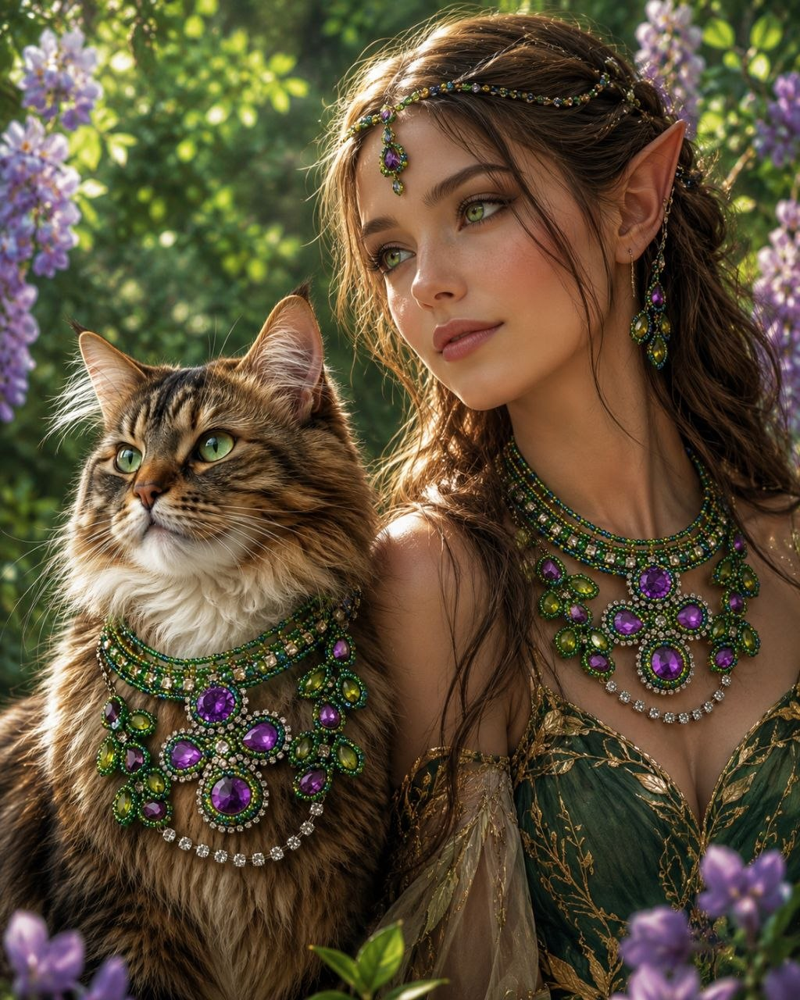
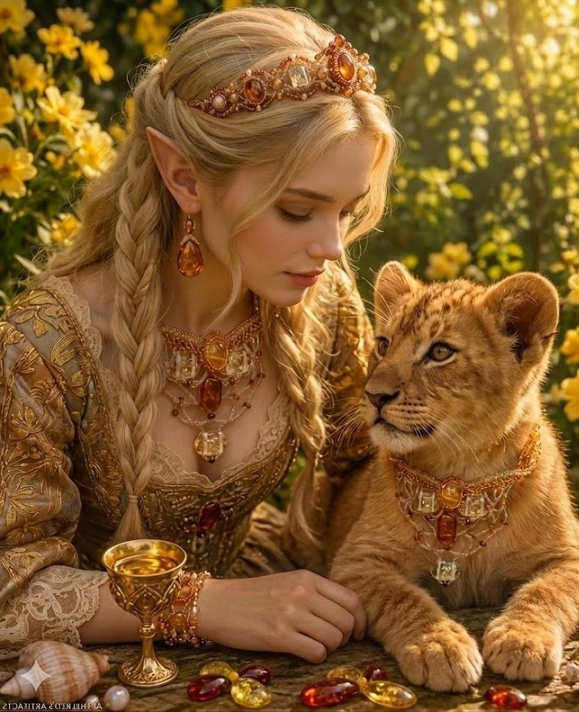
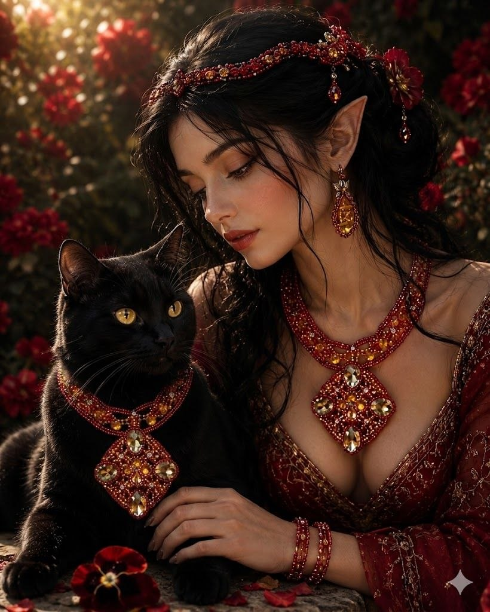
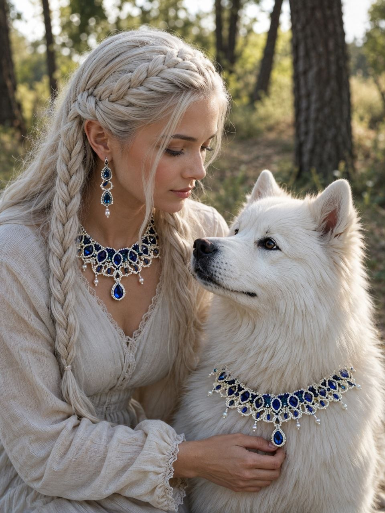

АВТОРСКИЕ
УКРАШЕНИЯ:
необычные и
неповторимые

Сиреневая Роза
Тончайшая анатомическая формовка металлических лепестков. Ювелирный японский микробисер оплетает центральный элемент — глубокий природный агат, улавливающий отблески лесного солнца.
Рассмотреть ближе
Побеги Омни
Линейный концепт, в точности повторяющий пластику дикой виноградной лозы. Живое переплетение матового золота и фактурных изгибов, созданное для интеграции в повседневный образ.
Рассмотреть ближе
Побеги Омни
Линейный концепт, в точности повторяющий пластику дикой виноградной лозы. Живое переплетение матового золота и фактурных изгибов, созданное для интеграции в повседневный образ.
Рассмотреть ближе
Побеги Омни
Линейный концепт, в точности повторяющий пластику дикой виноградной лозы. Живое переплетение матового золота и фактурных изгибов, созданное для интеграции в повседневный образ.
Рассмотреть ближе